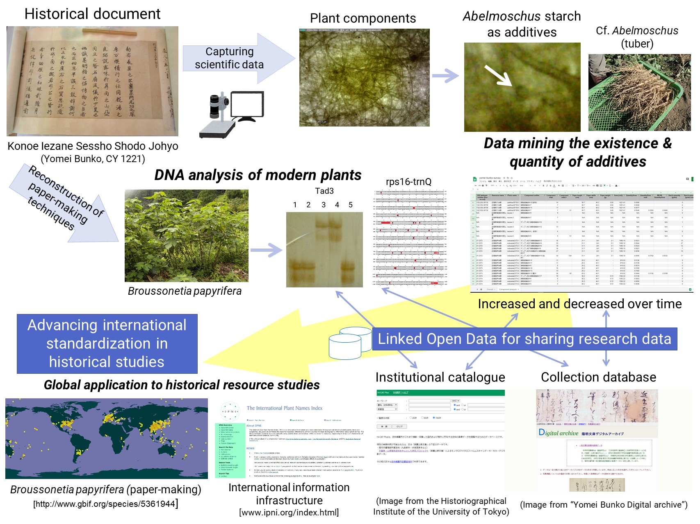

The scientific approach to historical resources creates a synthetic discipline benefitting from open access to data from the humanities and sciences. However, technological challenges exist because of dispersed and heterogeneous resource data. Through data sharing of historical resources, this paper proposes that the establishment of integrated data repositories will capture data provenance and diversity while promoting attribution and acknowledgment of its use. TTo enhance and accelerate scientific advances in historical studies, we enumerate digital humanities applications to solve the technological and sociological challenges that have limited open access to resource data in the world. We also standardise the scientific methodology of historical materials research using the following approaches: a qualitative analysis focusing on component details to compare our findings with the classifications granted to historical materials in previous studies, and the reconstruction of papermaking methods using DNA analysis.
